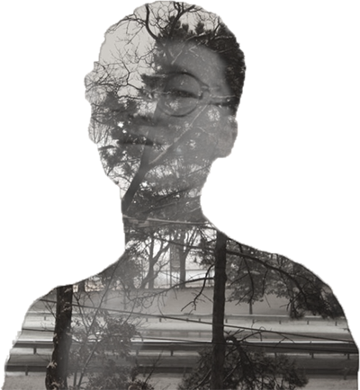

Ve C. Lin
I am a Fine Art major student. I like and enjoy in all those art making processing. As my impression, art happens in all of sudden. When I got in touch with photography, it deepened this impression. Art is happening all the time in suddenly and changing rapidly, but we can capture it in a good timing and make it last forever.